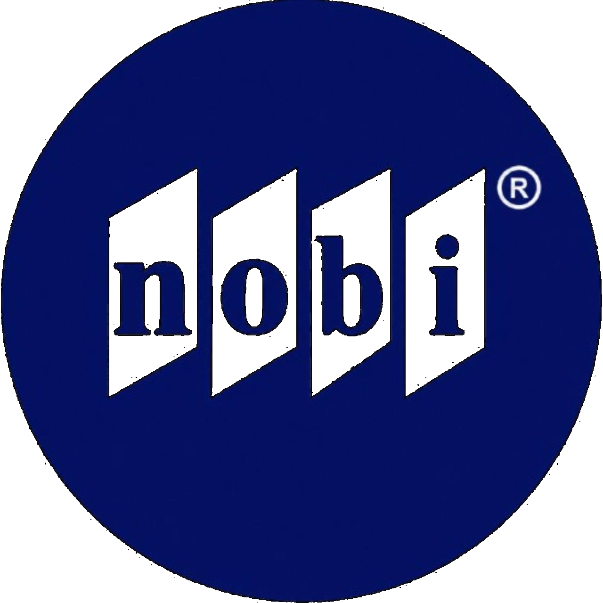
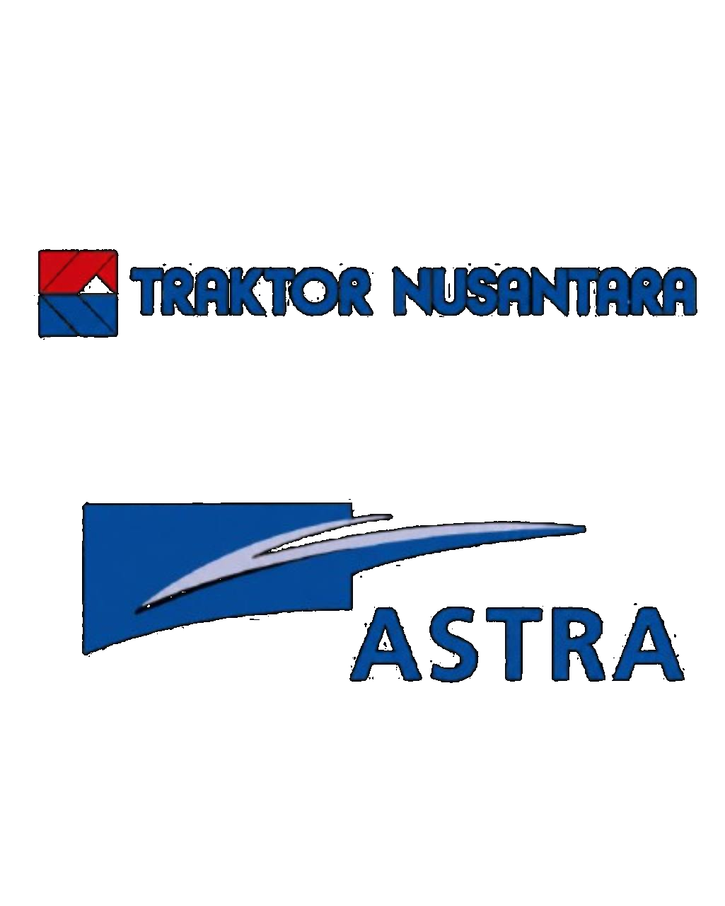

Sales
Fauzan Widianto
Analytical Systems Builder
Analytical Systems Builder
Turning scattered ERP transactions into practical operational visibility.
Fragmented data. Inconsistent entries. Hard to trust, harder to act on.
From noise to clarity.
Map sales → purchase → production → delivery → invoice → payment.
Check key data, statuses, dates, quantities, and completeness.
Match records and documents across related ERP modules.
Find mismatches, gaps, unusual cases, and delayed follow-up.
Build structured rules for reporting, review, and follow-up.
Clear insights. Trusted data. Actionable outcomes.
See each order across fulfilment, delivery, invoice, and payment.
Review margin, revenue, cost drivers, and unusual movements.
Surface mismatches, delays, missing links, and unusual cases.
Identify what needs attention, who owns it, and when.
Use trusted insights for faster, better operational decisions.
Each role shaped a different layer of how I understand problems: cost control, profitability, operations, manufacturing reality, ERP migration, and business review.

Expert Staff / VP Operations Support & ERP Analytics
Worked closely with VP Operations during ERP migration and post-migration stabilization. My role focused on understanding how sales, purchasing, production, delivery, invoicing, and payment data moved through Odoo, then turning that understanding into review logic, dashboards, and practical follow-up views for operations and management.
Project / Business Operations
Joined the business-building stage of a manufacturing and engineering services company. The work exposed me to workshop setup, operations, finance, manpower, customer coordination, and the practical reality behind manufacturing, fabrication, machining, pump services, and project delivery.

Service Profitability & Business Control
Focused on profitability review, pricing coordination, vendor cost movement, and business-control reporting for service operations. This role helped me connect operational decisions with commercial impact and management review.
Cost Control Analyst
Built my foundation in cost control, service-operation monitoring, dashboard reporting, and inventory governance. This is where I started learning how business problems appear inside numbers, contracts, stock movement, cost allocation, and operational workflows.
A practical skill set that moves from understanding business context to structuring data, reviewing logic, and building useful outputs.
I start by understanding how work actually moves through ERP, operations, approvals, and reporting. This prevents the solution from becoming only a tool exercise.
A visual map of how my skills developed from engineering foundations into business systems, ERP analytics, and AI-assisted execution.
The curve is a visual metaphor. It shows relative skill development and maturity, not a measurable score.
Homepage flow reordered so the Odoo flagship project appears directly after the hero as the main proof point.
Odoo case study ending simplified by removing the redundant dashboard modules section and keeping the flow focused on output evidence, review signals, and business value.
Homepage and Odoo case study wording aligned around practical review views, ERP data logic, dashboard signals, and follow-up.